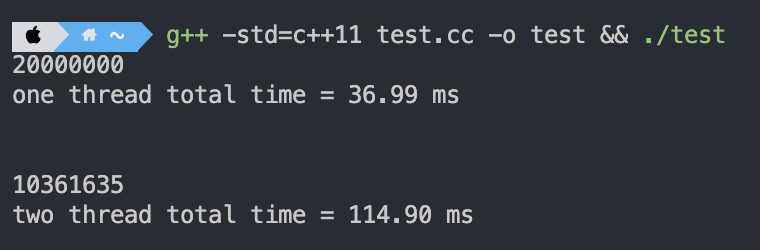
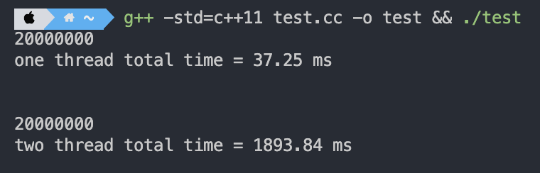
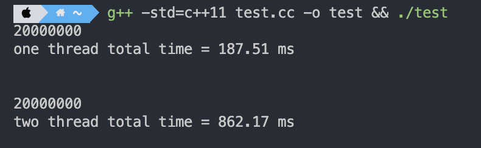

多线程编程中最令人头疼的就是如何处理好同步的问题，因为同一个进程中的线程共享地址空间，所以对于全局变量和静态变量，每个线程都可能去修改它，作为一名优秀的程序员，我们就要想办法保证这个变量最后的结果是正确的。
1.多线程并发读写
我们先通过一个简单的例子来理解多线程模式下变量是如何被修改的。
1 |
|

通过上面的实验，两个线程对一个全局变量进行加一操作，正确结果应该是200 0000，但是由于++操作并不是原子的，所以导致结果错误，并且耗时是单线程的3倍。
接下来，我们给每次操作加上一个锁。
1 | void func1() { |

可以看到，时间飙升，是单线程的60倍。因为加了锁，没有获得锁的线程就会被阻塞，所以程序就会频繁的进行线程调度，我们知道线程之间的切换虽然比进程之间的要快很多，但还是有一定的开销。
2.无锁编程
要想了解无锁编程，首先需要了解的就是CAS（Compare And Swap）机制，翻译过来就是比较并替换。
CAS机制当中使用了3个基本操作数：内存地址V，旧的预期值A，要修改的新值B。
只有当变量的预期值A和内存地址V当中的实际值相同时，才会将内存地址V对应的值修改为B。
为什么这样的操作在多线程环境下能做到同步呢？我们逐步分析一个多线程的实例。
假设在内存地址V中存储着值为10的变量。线程1想要把变量的值增加1，对于线程1来说，旧的预期值A=10，要修改的新值B=11。
在线程1要提交更新之前，线程2抢先一步，把内存地址V中的变量值率先改成了11。
线程1获得了控制权，在提交更新前，比较 A 的值与 V 的值不相等，提交失败。线程1重新获取内存地址V的当前值，并重新计算想要修改的新值，此时对线程1来说，A=11，B=12。这个重新尝试的过程被称为自旋。
最后线程1比较 A 的值和 V 的值相等，所以把 B 的值写入 V 中。
从思想上来说，Mutex 属于悲观锁，悲观地认为程序中的并发情况严重，所以严防死守。CAS属于乐观锁，乐观地认为程序中的并发情况不那么严重，所以让线程不断去尝试更新。
所以，我们可以把 g_cnt 改成原子变量：
1 | atomic<int> g_cnt(0); |

可以发现，时间减少了1倍。
3. 总结
无锁编程最大的优势是什么？是性能提高吗？其实并不是，我们的测试代码中临界区非常短，只有一个语句，所以显得加锁解锁操作对程序性能影响很大，但在实际应用中，我们的临界区一般不会这么短，临界区越长，加锁和解锁操作的性能损耗越微小，无锁编程和有锁编程之间的性能差距也就越微小。
CAS的缺点：
- CPU开销较大：在并发量比较高的情况下，如果许多线程反复尝试更新某一个变量，却又一直更新不成功，循环往复，会给CPU带来很大的压力。
- 不能保证代码块的原子性
CAS的优点：
- 避免了死锁的产生。
- 代码更加清晰与简洁。